Yellow Fever SEIR with 2-Track Vaccination
Introduction
Standard compartmental vaccination models use a single V compartment for vaccinated individuals. A 2-track approach instead replicates the full disease progression (S → E → I → R) into two parallel tracks:
| Track | Population | Susceptibility |
|---|---|---|
| Track 1 | Unvaccinated | Full (FOI) |
| Track 2 | Vaccinated | Reduced by vaccine efficacy |
This structure captures several realistic features:
- Vaccinated individuals can still become infected (imperfect vaccine)
- Different infection rates for vaccinated vs unvaccinated
- Separate tracking of outcomes by vaccination status
- Extensibility to waning immunity, dose-specific effects, etc.
This vignette ports the YEP SEIRModelVtrack model from R odin to Odin.jl, using 2D arrays (N_age × 2) for each compartment.
using Odin
using Plots
using Statistics
using RandomModel Description
State variables
For each of $a = 1, \ldots, N_\text{age}$ age groups and $j \in \{1, 2\}$ tracks:
\[S_{a,j}\]
— Susceptible\[E_{a,j}\]
— Exposed (latent)\[I_{a,j}\]
— Infectious\[R_{a,j}\]
— Recovered (immune)\[C_a\]
— New cases per time step (summed across tracks)
Force of infection
\[\lambda(t) = \min\!\left(1,\;\frac{R_0(t)}{t_\text{inf}} \cdot \frac{\sum_{a,j} I_{a,j}}{P_\text{tot}} + \text{FOI}_\text{spill}(t)\right)\]
Infection probabilities differ by track:
- Unvaccinated: $p_\text{inf} = 1 - e^{-\lambda \cdot \Delta t}$
- Vaccinated: $p_\text{inf,v} = 1 - e^{-\lambda (1-\varepsilon) \cdot \Delta t}$
where $\varepsilon$ is vaccine efficacy.
Vaccination
At each step, a proportion of unvaccinated S and R individuals move to track 2:
\[S_\text{vax}[a] = v_a \cdot S_{a,1} \cdot \Delta t, \quad R_\text{vax}[a] = v_a \cdot R_{a,1} \cdot \Delta t\]
Aging
Individuals age between groups via demographic flows dP1 (inflow) and dP2 (outflow), distributed proportionally across compartments within each age group.
Model Definition
yf_vtrack = @odin begin
# === Configuration ===
N_age = parameter(5)
# === Dimensions: 2D arrays (age × vaccination track) ===
dim(S) = c(N_age, 2)
dim(E) = c(N_age, 2)
dim(I) = c(N_age, 2)
dim(R) = c(N_age, 2)
dim(C) = N_age
dim(S_0) = c(N_age, 2)
dim(E_0) = c(N_age, 2)
dim(I_0) = c(N_age, 2)
dim(R_0) = c(N_age, 2)
dim(E_new) = c(N_age, 2)
dim(I_new) = c(N_age, 2)
dim(R_new) = c(N_age, 2)
dim(S_new_V) = N_age
dim(R_new_V) = N_age
dim(P_nV) = N_age
dim(inv_P_nV) = N_age
dim(P) = N_age
dim(inv_P) = N_age
dim(dP1) = N_age
dim(dP2) = N_age
# === Epidemiological parameters ===
t_latent = parameter(5.0)
t_infectious = parameter(5.0)
vaccine_efficacy = parameter(0.95)
rate1 = 1.0 / t_latent
rate2 = 1.0 / t_infectious
# === Time-varying R0 and spillover ===
R0_t = interpolate(R0_time, R0_value, :linear)
FOI_sp = interpolate(sp_time, sp_value, :linear)
beta = R0_t / t_infectious
# === Population totals (S + R only, as in the original model) ===
P_nV[i] = max(S[i, 1] + R[i, 1], 1e-99)
inv_P_nV[i] = 1.0 / P_nV[i]
P[i] = max(S[i, 1] + R[i, 1] + S[i, 2] + R[i, 2], 1e-99)
inv_P[i] = 1.0 / P[i]
P_tot = sum(P)
I_tot = sum(I)
# === Force of infection ===
FOI_raw = beta * I_tot / max(P_tot, 1.0) + FOI_sp
FOI_sum = min(1.0, FOI_raw)
# === Transition probabilities ===
p_inf = 1 - exp(-FOI_sum * dt)
p_inf_vacc = 1 - exp(-FOI_sum * (1.0 - vaccine_efficacy) * dt)
p_lat = 1 - exp(-rate1 * dt)
p_rec = 1 - exp(-rate2 * dt)
# === Stochastic transitions (track-dependent infection probability) ===
E_new[i, j] = if (j == 1) Binomial(S[i, j], p_inf) else Binomial(S[i, j], p_inf_vacc) end
I_new[i, j] = Binomial(E[i, j], p_lat)
R_new[i, j] = Binomial(I[i, j], p_rec)
# === Vaccination flows (track 1 → track 2) ===
S_new_V[i] = vacc_rate[i] * S[i, 1] * dt
R_new_V[i] = vacc_rate[i] * R[i, 1] * dt
# === Demographic flows ===
dP1_rate = interpolate(dP1_time, dP1_value, :constant)
dP2_rate = interpolate(dP2_time, dP2_value, :constant)
dP1[i] = dP1_rate * 0.01
dP2[i] = dP2_rate * 0.01
# === State updates: S track 1 (unvaccinated) ===
update(S[1, 1]) = max(0.0, S[1, 1] - E_new[1, 1] - S_new_V[1]
+ dP1[1] - dP2[1] * S[1, 1] * inv_P[1])
update(S[2:N_age, 1]) = max(0.0, S[i, 1] - E_new[i, 1] - S_new_V[i]
+ dP1[i] * S[i - 1, 1] * inv_P[i - 1]
- dP2[i] * S[i, 1] * inv_P[i])
# === State updates: S track 2 (vaccinated) ===
update(S[1, 2]) = max(0.0, S[1, 2] - E_new[1, 2] + S_new_V[1]
- dP2[1] * S[1, 2] * inv_P[1])
update(S[2:N_age, 2]) = max(0.0, S[i, 2] - E_new[i, 2] + S_new_V[i]
+ dP1[i] * S[i - 1, 2] * inv_P[i - 1]
- dP2[i] * S[i, 2] * inv_P[i])
# === E and I: same rule for both tracks ===
update(E[1:N_age, 1:2]) = max(0.0, E[i, j] + E_new[i, j] - I_new[i, j])
update(I[1:N_age, 1:2]) = max(0.0, I[i, j] + I_new[i, j] - R_new[i, j])
# === R track 1 (unvaccinated) ===
update(R[1, 1]) = max(0.0, R[1, 1] + R_new[1, 1] - R_new_V[1]
- dP2[1] * R[1, 1] * inv_P[1])
update(R[2:N_age, 1]) = max(0.0, R[i, 1] + R_new[i, 1] - R_new_V[i]
+ dP1[i] * R[i - 1, 1] * inv_P[i - 1]
- dP2[i] * R[i, 1] * inv_P[i])
# === R track 2 (vaccinated) ===
update(R[1, 2]) = max(0.0, R[1, 2] + R_new[1, 2] + R_new_V[1]
- dP2[1] * R[1, 2] * inv_P[1])
update(R[2:N_age, 2]) = max(0.0, R[i, 2] + R_new[i, 2] + R_new_V[i]
+ dP1[i] * R[i - 1, 2] * inv_P[i - 1]
- dP2[i] * R[i, 2] * inv_P[i])
# === New cases per step (both tracks) ===
initial(C[i], zero_every = 1) = 0
update(C[i]) = I_new[i, 1] + I_new[i, 2]
# === Outputs ===
output(FOI_total) = FOI_sum
output(total_I) = I_tot
output(total_pop) = P_tot
# === Data comparison for particle filter ===
cases = data()
C_total = sum(C)
cases ~ Poisson(max(C_total, 1e-6))
# === Initial conditions ===
initial(S[i, j]) = S_0[i, j]
initial(E[i, j]) = E_0[i, j]
initial(I[i, j]) = I_0[i, j]
initial(R[i, j]) = R_0[i, j]
# === Parameters ===
S_0 = parameter()
E_0 = parameter()
I_0 = parameter()
R_0 = parameter()
vacc_rate = parameter(rank = 1)
R0_time = parameter(rank = 1)
R0_value = parameter(rank = 1)
sp_time = parameter(rank = 1)
sp_value = parameter(rank = 1)
dP1_time = parameter(rank = 1)
dP1_value = parameter(rank = 1)
dP2_time = parameter(rank = 1)
dP2_value = parameter(rank = 1)
endOdin.DustSystemGenerator{var"##OdinModel#277"}(var"##OdinModel#277"(0, [:C, :S, :E, :I, :R], [:N_age, :t_latent, :t_infectious, :vaccine_efficacy, :S_0, :E_0, :I_0, :R_0, :vacc_rate, :R0_time, :R0_value, :sp_time, :sp_value, :dP1_time, :dP1_value, :dP2_time, :dP2_value], false, false, true, true, true, Dict{Symbol, Array}()))Parameter Setup
Demographics
Five age groups representing a typical sub-Saharan African distribution:
N_age = 5
age_labels = ["0–4", "5–14", "15–24", "25–49", "50+"]
age_colors = [:blue, :red, :green, :orange, :purple]
pop = [150_000.0, 250_000.0, 200_000.0, 150_000.0, 100_000.0]
N_total = sum(pop)
println("Total population: ", Int(N_total))Total population: 850000Initial conditions
Most of the population starts unvaccinated (track 1). A fraction is pre-vaccinated (track 2), and some have prior immunity:
S_0 = zeros(N_age, 2)
E_0 = zeros(N_age, 2)
I_0 = zeros(N_age, 2)
R_0 = zeros(N_age, 2)
# Pre-existing immunity in track 1 (unvaccinated recovered)
immun_frac = [0.05, 0.10, 0.15, 0.20, 0.30]
for i in 1:N_age
R_0[i, 1] = round(pop[i] * immun_frac[i])
end
# Pre-existing vaccination: fraction starts in track 2 (susceptible vaccinated)
vacc_frac = [0.20, 0.30, 0.15, 0.10, 0.05]
for i in 1:N_age
S_0[i, 2] = round(pop[i] * vacc_frac[i])
end
# Remaining population is unvaccinated susceptible (track 1)
for i in 1:N_age
S_0[i, 1] = pop[i] - R_0[i, 1] - S_0[i, 2]
end
# Seed 50 infections in age group 3 (15–24), unvaccinated track
I_0[3, 1] = 50.0
S_0[3, 1] -= 50.0
println("S_0 (unvacc): ", S_0[:, 1])
println("S_0 (vacc): ", S_0[:, 2])
println("R_0 (unvacc): ", R_0[:, 1])
println("I_0 (unvacc): ", I_0[:, 1])S_0 (unvacc): [112500.0, 150000.0, 139950.0, 105000.0, 65000.0]
S_0 (vacc): [30000.0, 75000.0, 30000.0, 15000.0, 5000.0]
R_0 (unvacc): [7500.0, 25000.0, 30000.0, 30000.0, 30000.0]
I_0 (unvacc): [0.0, 0.0, 50.0, 0.0, 0.0]Time-varying parameters
n_years = 5
t_end = 365.0 * n_years
# R0: seasonal pattern (range 2–5)
R0_time = collect(0.0:30.0:(t_end + 30.0))
R0_value = [3.5 + 1.5 * sin(2π * t / 365) for t in R0_time]
# Spillover FOI: background + seasonal pulses
sp_time = collect(0.0:30.0:(t_end + 30.0))
sp_value = [1e-6 + 5e-5 * max(0, sin(2π * t / 365 - π/3))^3 for t in sp_time]
# Simple constant demographic rates
dP1_time = [0.0, t_end + 1.0]
dP1_value = [1.0, 1.0]
dP2_time = [0.0, t_end + 1.0]
dP2_value = [1.0, 1.0]
# Vaccination rates by age group (daily per-capita)
vacc_rate = [0.001, 0.0008, 0.0005, 0.0003, 0.0001]
plot(R0_time[1:25], R0_value[1:25], lw=2, color=:steelblue,
xlabel="Day", ylabel="R0", title="Time-varying R0 (first 2 years)",
label="R0", legend=:topright)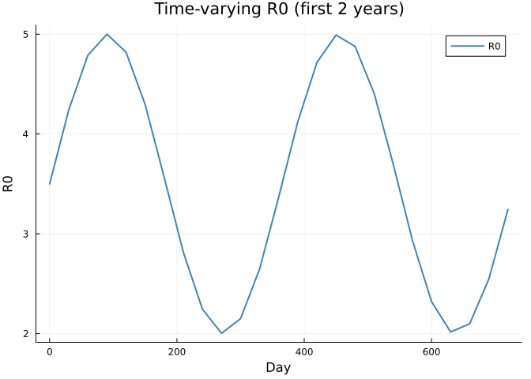
Assemble parameters
pars = (
N_age = Float64(N_age),
t_latent = 5.0,
t_infectious = 5.0,
vaccine_efficacy = 0.95,
S_0 = S_0,
E_0 = E_0,
I_0 = I_0,
R_0 = R_0,
vacc_rate = vacc_rate,
R0_time = R0_time,
R0_value = R0_value,
sp_time = sp_time,
sp_value = sp_value,
dP1_time = dP1_time,
dP1_value = dP1_value,
dP2_time = dP2_time,
dP2_value = dP2_value,
)(N_age = 5.0, t_latent = 5.0, t_infectious = 5.0, vaccine_efficacy = 0.95, S_0 = [112500.0 30000.0; 150000.0 75000.0; … ; 105000.0 15000.0; 65000.0 5000.0], E_0 = [0.0 0.0; 0.0 0.0; … ; 0.0 0.0; 0.0 0.0], I_0 = [0.0 0.0; 0.0 0.0; … ; 0.0 0.0; 0.0 0.0], R_0 = [7500.0 0.0; 25000.0 0.0; … ; 30000.0 0.0; 30000.0 0.0], vacc_rate = [0.001, 0.0008, 0.0005, 0.0003, 0.0001], R0_time = [0.0, 30.0, 60.0, 90.0, 120.0, 150.0, 180.0, 210.0, 240.0, 270.0 … 1560.0, 1590.0, 1620.0, 1650.0, 1680.0, 1710.0, 1740.0, 1770.0, 1800.0, 1830.0], R0_value = [3.5, 4.240663325239966, 4.788145937413704, 4.999652752969836, 4.8200183059603035, 4.2960950722429, 3.564533349506796, 2.8161399597373116, 2.246111780872045, 2.003124258701912 … 4.983016385348511, 4.678474782618075, 4.066561947805955, 3.3068777338211284, 2.5975639051626143, 2.1236245609109092, 2.008673139659072, 2.2826914114889583, 2.874209596081522, 3.628947198106164], sp_time = [0.0, 30.0, 60.0, 90.0, 120.0, 150.0, 180.0, 210.0, 240.0, 270.0 … 1560.0, 1590.0, 1620.0, 1650.0, 1680.0, 1710.0, 1740.0, 1770.0, 1800.0, 1830.0], sp_value = [1.0e-6, 1.0e-6, 1.0e-6, 6.5729391399279415e-6, 3.185015736396266e-5, 5.0903611113164396e-5, 3.586190273481683e-5, 8.997773041104356e-6, 1.0094308797359557e-6, 1.0e-6 … 1.3165510956508187e-5, 4.103779800864081e-5, 4.962210888744134e-5, 2.6070287784826442e-5, 3.98770453944338e-6, 1.0e-6, 1.0e-6, 1.0e-6, 1.0e-6, 1.0e-6], dP1_time = [0.0, 1826.0], dP1_value = [1.0, 1.0], dP2_time = [0.0, 1826.0], dP2_value = [1.0, 1.0])Simulation
n_particles = 10
sim_times = collect(0.0:1.0:t_end)
result = simulate(yf_vtrack, pars;
times=sim_times, dt=1.0, seed=42, n_particles=n_particles)
println("Result shape: ", size(result),
" (n_state+n_output × n_particles × n_times)")Result shape: (48, 10, 1826) (n_state+n_output × n_particles × n_times)State layout
The 2D arrays are stored column-major: all of column 1 (unvaccinated), then column 2 (vaccinated). With N_age=5:
# State order follows initial() declaration:
# C[1:5], S[6:15] (5 unvacc + 5 vacc), E[16:25], I[26:35], R[36:45]
idx_C = 1:N_age
idx_S = (N_age + 1):(3 * N_age)
idx_E = (3 * N_age + 1):(5 * N_age)
idx_I = (5 * N_age + 1):(7 * N_age)
idx_R = (7 * N_age + 1):(9 * N_age)
out_offset = 9 * N_age
# Within each 2D block: first N_age = track 1, next N_age = track 2
idx_S1 = (N_age + 1):(2 * N_age) # S unvaccinated
idx_S2 = (2 * N_age + 1):(3 * N_age) # S vaccinated
idx_I1 = (5 * N_age + 1):(6 * N_age) # I unvaccinated
idx_I2 = (6 * N_age + 1):(7 * N_age) # I vaccinated
idx_R1 = (7 * N_age + 1):(8 * N_age) # R unvaccinated
idx_R2 = (8 * N_age + 1):(9 * N_age) # R vaccinated
println("State variables: ", 9 * N_age, " + 3 outputs")State variables: 45 + 3 outputsVisualization
SEIR by track
S1_total = vec(mean(sum(result[idx_S1, :, :], dims=1), dims=2))
S2_total = vec(mean(sum(result[idx_S2, :, :], dims=1), dims=2))
I1_total = vec(mean(sum(result[idx_I1, :, :], dims=1), dims=2))
I2_total = vec(mean(sum(result[idx_I2, :, :], dims=1), dims=2))
p = plot(xlabel="Day", ylabel="Population",
title="Susceptible by Vaccination Track",
legend=:right, size=(900, 400))
plot!(p, sim_times, S1_total, lw=2, label="S unvaccinated", color=:blue)
plot!(p, sim_times, S2_total, lw=2, label="S vaccinated", color=:cyan)
p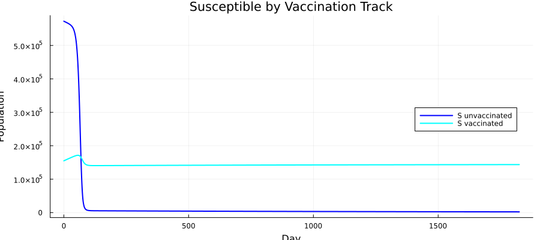
Infectious by track
p = plot(xlabel="Day", ylabel="Mean Infectious",
title="Infectious: Unvaccinated vs Vaccinated",
legend=:topright, size=(900, 400))
plot!(p, sim_times, I1_total, lw=2, label="I unvaccinated", color=:red)
plot!(p, sim_times, I2_total, lw=2, label="I vaccinated", color=:salmon)
p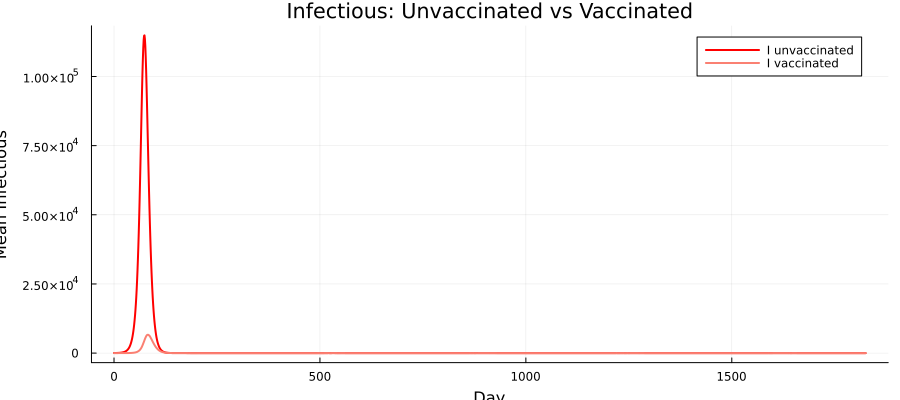
Infectious by age group (total)
p = plot(xlabel="Day", ylabel="Mean Infectious",
title="Infectious by Age Group (both tracks)",
legend=:topright, size=(900, 400))
for a in 1:N_age
I_a = vec(mean(result[idx_I1[a], :, :] .+ result[idx_I2[a], :, :], dims=1))
plot!(p, sim_times, I_a, lw=2, color=age_colors[a], label=age_labels[a])
end
p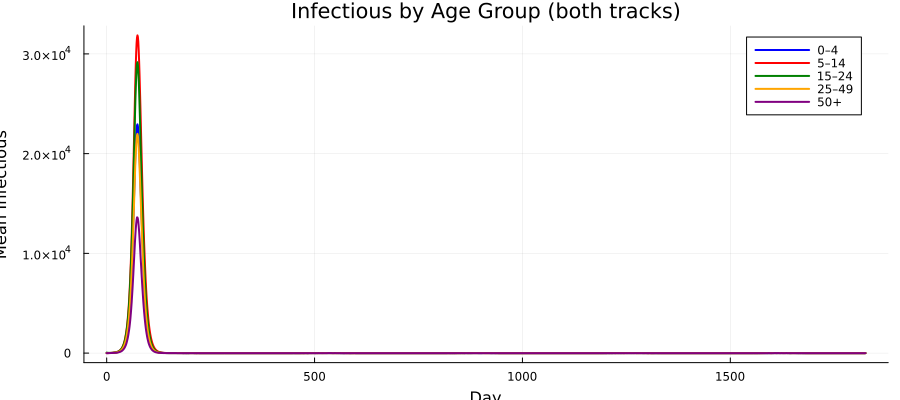
Force of infection
FOI = vec(mean(result[out_offset + 1, :, :], dims=1))
plot(sim_times, FOI, lw=1.5, color=:darkred,
xlabel="Day", ylabel="FOI",
title="Total Force of Infection (mean across particles)",
label="FOI", legend=:topright, size=(900, 350))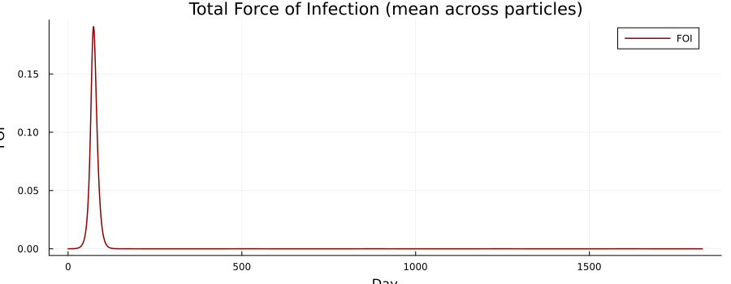
Vaccination coverage over time
Track how the vaccinated pool grows and unvaccinated shrinks:
p = plot(xlabel="Day", ylabel="Population",
title="Track Populations Over Time",
legend=:right, size=(900, 400))
# Sum S+R across ages for each track (the "targetable" pool)
SR1 = vec(mean(sum(result[idx_S1, :, :], dims=1) .+
sum(result[idx_R1, :, :], dims=1), dims=2))
SR2 = vec(mean(sum(result[idx_S2, :, :], dims=1) .+
sum(result[idx_R2, :, :], dims=1), dims=2))
plot!(p, sim_times, SR1, lw=2, label="S+R unvaccinated", color=:blue)
plot!(p, sim_times, SR2, lw=2, label="S+R vaccinated", color=:green)
p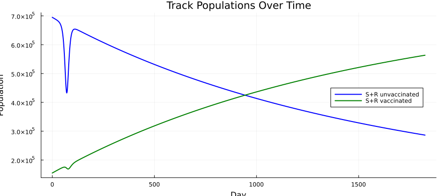
Cumulative cases by age
cum_cases = zeros(N_age, length(sim_times))
for a in 1:N_age
daily = vec(mean(result[idx_C[a], :, :], dims=1))
cum_cases[a, :] = cumsum(daily)
end
p = plot(xlabel="Day", ylabel="Cumulative Cases",
title="Cumulative Cases by Age Group",
legend=:topleft, size=(900, 400))
for a in 1:N_age
plot!(p, sim_times, cum_cases[a, :], lw=2,
color=age_colors[a], label=age_labels[a])
end
p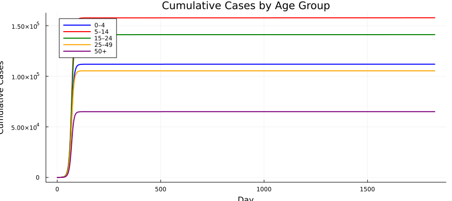
Stochastic variability
p = plot(xlabel="Day", ylabel="Total Infectious",
title="Stochastic Variability ($n_particles realisations)",
legend=false, size=(900, 400))
for i in 1:n_particles
I_tot = sum(result[idx_I, i, :], dims=1)[:]
plot!(p, sim_times, I_tot, color=:red, alpha=0.4, lw=0.8)
end
I_mean = vec(mean(sum(result[idx_I, :, :], dims=1), dims=2))
plot!(p, sim_times, I_mean, color=:black, lw=3)
p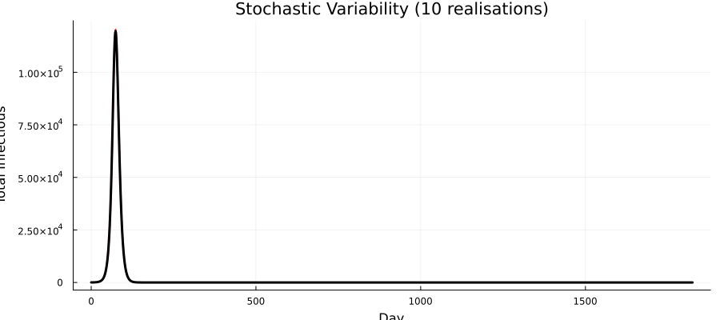
Population Conservation Check
pop_t = zeros(n_particles, length(sim_times))
for i in 1:n_particles
pop_t[i, :] = sum(result[idx_S, i, :], dims=1)[:] .+
sum(result[idx_E, i, :], dims=1)[:] .+
sum(result[idx_I, i, :], dims=1)[:] .+
sum(result[idx_R, i, :], dims=1)[:]
end
p = plot(xlabel="Day", ylabel="Total Population",
title="Population Conservation Check", legend=:topright,
size=(900, 350))
for i in 1:min(5, n_particles)
plot!(p, sim_times, pop_t[i, :], lw=1, alpha=0.6,
label=(i == 1 ? "Particles" : ""))
end
hline!(p, [N_total], color=:black, lw=2, ls=:dash, label="Initial total")
p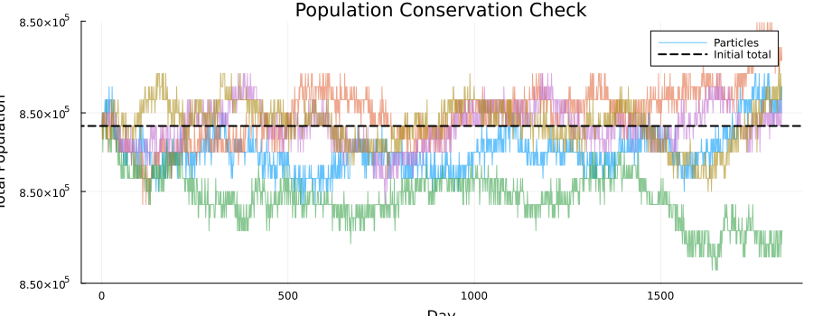
println("Population at t=0: ", mean(pop_t[:, 1]))
println("Population at t=end: ", mean(pop_t[:, end]))
rel_change = abs(mean(pop_t[:, end]) - N_total) / N_total * 100
println("Relative change: ", round(rel_change, digits=4), "%")Population at t=0: 850000.0
Population at t=end: 850000.0
Relative change: 0.0%Scenario: No Vaccination
Compare the epidemic with and without ongoing vaccination:
S_0_nv = zeros(N_age, 2)
E_0_nv = zeros(N_age, 2)
I_0_nv = copy(I_0)
R_0_nv = zeros(N_age, 2)
# All population in track 1 (unvaccinated)
for i in 1:N_age
R_0_nv[i, 1] = round(pop[i] * immun_frac[i])
S_0_nv[i, 1] = pop[i] - R_0_nv[i, 1] - I_0_nv[i, 1]
end
pars_novacc = merge(pars, (
vacc_rate = zeros(N_age),
S_0 = S_0_nv,
E_0 = E_0_nv,
R_0 = R_0_nv,
))
result_nv = simulate(yf_vtrack, pars_novacc;
times=sim_times, dt=1.0, seed=42, n_particles=n_particles)
I_vacc = vec(mean(sum(result[idx_I, :, :], dims=1), dims=2))
I_novacc = vec(mean(sum(result_nv[idx_I, :, :], dims=1), dims=2))
plot(sim_times, I_novacc, lw=2, color=:red, label="No vaccination",
xlabel="Day", ylabel="Mean Total Infectious",
title="Impact of 2-Track Vaccination on Yellow Fever",
legend=:topright, size=(900, 400))
plot!(sim_times, I_vacc, lw=2, color=:blue, label="With vaccination")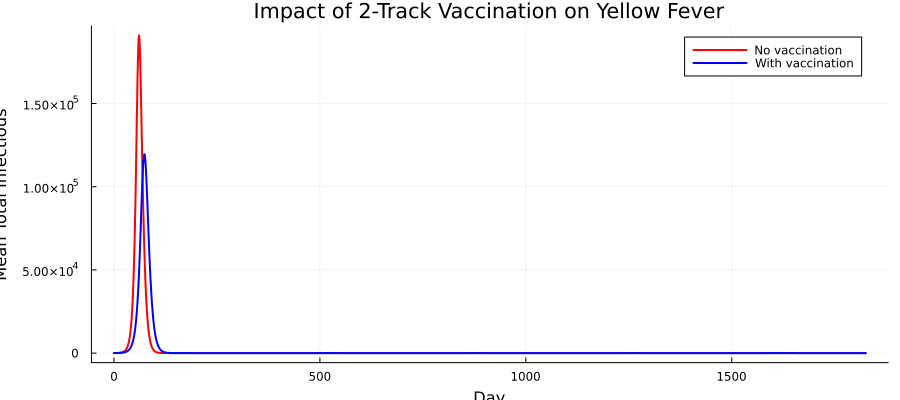
Particle Filter
We generate synthetic case data from the model, then run a bootstrap particle filter to estimate the log-likelihood:
# Generate synthetic data from a single run
syn_times = collect(7.0:7.0:min(365.0, t_end))
syn_result = simulate(yf_vtrack, pars;
times=syn_times, dt=1.0, seed=123, n_particles=1)
# Total new cases per week
syn_cases = [max(1.0, sum(syn_result[idx_C, 1, t])) for t in 1:length(syn_times)]
data_vec = [(time=syn_times[i], cases=syn_cases[i]) for i in 1:length(syn_times)]
fdata = Odin.ObservedData(data_vec)
println("Data points: ", length(syn_times))
println("Total observed cases: ", sum(syn_cases))
plot(syn_times, syn_cases, seriestype=:bar, color=:steelblue, alpha=0.7,
xlabel="Day", ylabel="Cases", title="Synthetic Weekly Case Data",
label="Observed cases", legend=:topright, size=(900, 350))Data points: 52
Total observed cases: 83457.0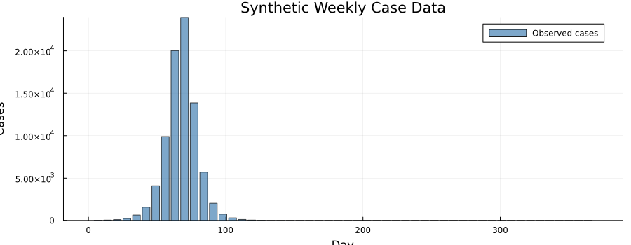
# Create and run particle filter
filter = Likelihood(yf_vtrack, fdata;
n_particles=100, dt=1.0, seed=42)
ll = loglik(filter, pars)
println("Log-likelihood (true pars): ", round(ll, digits=2))
# Perturbed parameters should give worse log-likelihood
pars_bad = merge(pars, (t_infectious = 20.0,))
ll_bad = loglik(filter, pars_bad)
println("Log-likelihood (bad pars): ", round(ll_bad, digits=2))
@assert ll > ll_bad "True parameters should have higher likelihood"
println("✓ True parameters preferred over misspecified")Log-likelihood (true pars): -270.82
Log-likelihood (bad pars): -298501.07
✓ True parameters preferred over misspecifiedSummary
| Component | Value |
|---|---|
| Age groups | 5 (0–4, 5–14, 15–24, 25–49, 50+) |
| Tracks | 2 (unvaccinated, vaccinated) |
| Compartments | SEIR × 2 tracks + cumulative cases |
| State variables | 45 (4 × 5 × 2 + 5) |
| Time step | 1 day |
| Stochastic draws | Binomial for all transitions |
| Vaccination | Moves S,R from track 1 → track 2 |
| Vaccine efficacy | Reduces FOI for track 2 by 95% |
Key features of the 2-track approach
Separate infection tracking — vaccinated individuals can still be infected but at a reduced rate, allowing monitoring of breakthrough infections.
2D array structure —
dim(S) = c(N_age, 2)naturally extends to more tracks (e.g., 1-dose vs 2-dose, waning immunity stages).Partial array updates — different update rules for track 1 vs track 2 handle the asymmetric vaccination flows (out of track 1, into track 2).
Shared FOI — both tracks contribute to and are affected by the same force of infection, ensuring epidemiological consistency.
| Step | API |
|---|---|
| Define model | @odin begin … end with 2D arrays c(N_age, 2) |
| Simulate | simulate(gen, pars; times, dt, seed, n_particles) |
| Filter | Likelihood() → loglik() |
| Scenario comparison | Re-run with vacc_rate = zeros(N_age) |